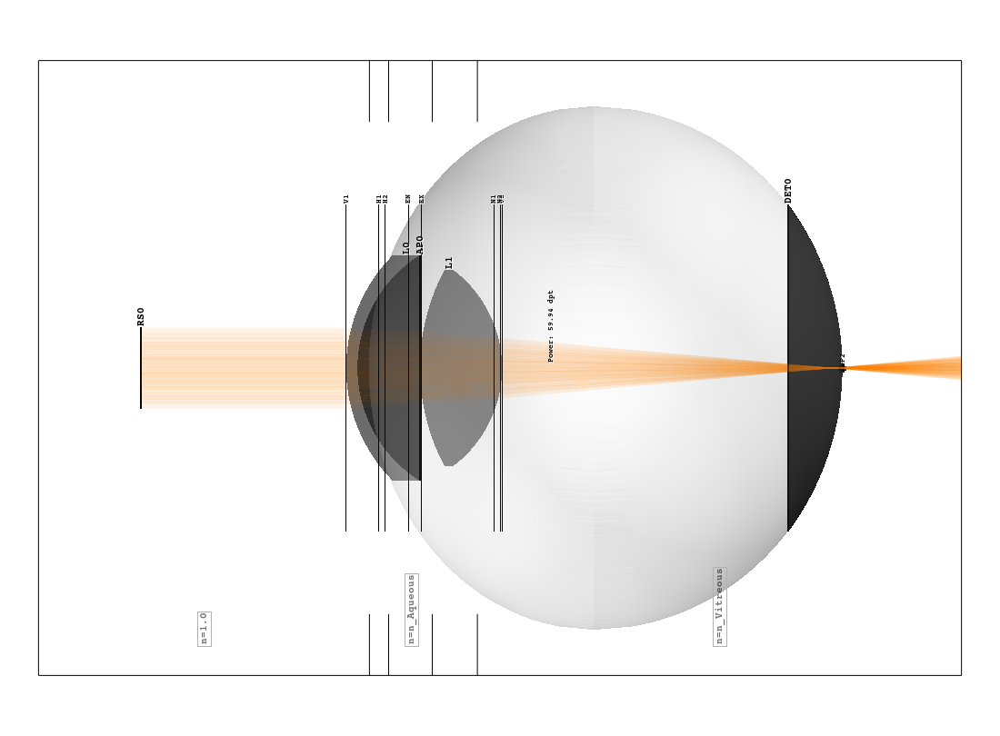
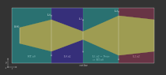

4.5. Raytracer#
4.5.1. Raytracer#
Overview
The Raytracer class provides the functionality for tracing, geometry checking, rendering spectra and images, and focusing.
Since the Raytracer is a subclass of a Group, elements can be changed or added in the same way.
{kind=link}

Fig. 4.18 Example of a raytracer geometry in the TraceGUI in side view#
Outline
All objects and rays can only exist in a three-dimensional box, the outline.
When initializing the Raytracer it is passed as outline parameter.
RT = ot.Raytracer(outline=[-2, 2, -3, 3, -5, 60])
Geometry
Since optrace implements sequential raytracing, the surfaces and objects must be in a well-defined and unique sequence. This applies to all elements with interactions of light: Lens, IdealLens, Filter, Aperture, RaySource.
The elements Detector, LineMarker, PointMarker, BoxVolume, SphereVolume, CylinderVolume are excluded from this.
All ray source elements must lie before all lenses, filters and apertures. And all subsequent lenses, filters, apertures must not collide with each other and be inside the outline.
Rays that hit the outline box will be absorbed.
Surrounding Media
In Lens we learned that when creating a lens, the n2 parameter defines the subsequent medium. In the case of multiple lenses, the n2 of the previous lens is the medium prior to the next lens.
In the case of the raytracer, we can define an n0 which defines the refractive index for all undefined n2=None, as well as for the region to the first lens.
The following figure shows a setup with lenses L0, L2 having a n2 defined and a custom n0 parameter in the raytracer class. The medium before the first lens as well as the medium behind L1 are therefore also n0.
{kind=link}

Fig. 4.19 Schematic figure of a setup with a ray source, three different lenses and three different ambient media#
Absorbing Rays
optrace ensures that rays not intersecting both lens surfaces get absorbed.
Generally, these rays are error cases. A ray only hitting one surfaces must enter/leave through the lens side cylinder, that is not handled in our sequential simulation. Rays not hitting the lens at all are typically undesired. In real optical systems they would be (hopefully) absorbed by the housing of the system.
Parameter no_pol
The raytracer provides the functionality to trace polarization directions. Thus, not only the polarization vector for the ray and ray segment can be calculated, but also the exact transmission at each surface transition. Unfortunately, the calculation is comparatively computationally intensive.
With the parameter no_pol=True no polarizations are calculated and a unpolarized/uniformly polarized light is assumed everywhere. Typically this speeds up the tracing by 10-30%.
Whether you can neglect the influence of polarization depends on the exact setup of the geometry.
4.5.2. Tracing#
Tracing the system
Tracing is with the Raytracer.trace() method of the Raytracer class.
It takes the number of rays N as parameter.
The method uses the current tracing geometry and stores the ray properties internally in a RayStorage object.
Example
Below you can find an example. A eye preset is loaded and flipped around the x-axis. A point source is added at the retina and the geometry is traced.
import optrace as ot
# init raytracer
RT = ot.Raytracer(outline=[-10, 10, -10, 10, -10, 60])
# load eye preset
eye = ot.presets.geometry.arizona_eye(pupil=3)
# flip, move and add it to the tracer
eye.flip()
eye.move_to([0, 0, 0])
RT.add(eye)
# create and add divergent point source
point = ot.Point()
RS = ot.RaySource(point, spectrum=ot.presets.light_spectrum.d50, divergence="Isotropic", div_angle=5,
pos=[0, 0, 0])
RT.add(RS)
# trace
RT.trace(100000)
# access ray parameters, render images etc.
...
Accessing the Ray Properties
Described in Section 4.15.2.
Rendering Images
Described in Section 4.8.3.
Tracing with many rays
The number of rays is limited by the RAM usage.
The RAM usage is by default limited by the Raytracer.MAX_RAY_STORAGE_RAM parameter, the actual number of rays results from the complexity of the geometry.
Its default value is 8GB, but it can be set for each Raytracer object separately.
To generate images with even more rays, the method Raytracer.iterative_render can be applied, which traces the geometry iteratively without holding all rays in memory. More details are available in Section 4.8.4.